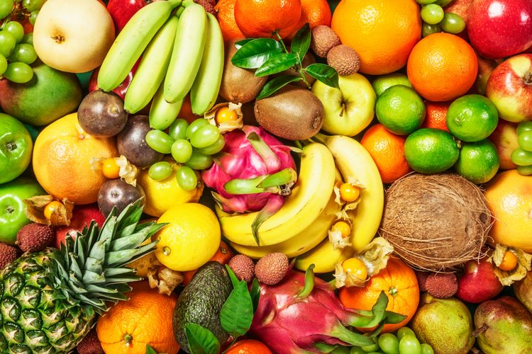

tentangbuah.com
Semangka

Buah adalah organ pada tumbuhan berbunga yang merupakan perkembangan lanjutan dari bakal buah (ovarium). Buah biasanya membungkus dan melindungi biji. Aneka rupa dan bentuk buah tidak terlepas kaitannya dengan fungsi utama buah, yakni sebagai pemencar biji tumbuhan.
Pengertian buah dalam lingkup pertanian (hortikultura) atau pangan adalah lebih luas daripada pengertian buah di atas dan biasanya disebut sebagai buah-buahan. Buah dalam pengertian ini tidak terbatas yang terbentuk dari bakal buah, melainkan dapat pula berasal dari perkembangan organ yang lain. Karena itu, untuk membedakannya, buah yang sesuai menurut pengertian botani biasa disebut buah sejati.
Buah sering kali memiliki nilai ekonomi sebagai bahan pangan maupun bahan baku industri karena di dalamnya disimpan berbagai macam produk metabolisme tumbuhan, mulai dari karbohidrat, protein, lemak, vitamin, mineral, alkaloid, hingga terpena dan terpenoid. Ilmu yang mempelajari segala hal tentang buah dinamakan pomologi.